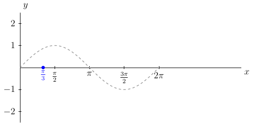

Section 4.2
Let \(y=f(x)\) be a plot of some graph. Then \(f(x-h)\) will be the plot of \(y=f(x)\) but with a horizontal shift of \(h\) units.
{prf:example}
- label:
hozShiftSine1
Plot \(y=\sin(x-\frac{\pi}{3})\)
{dropdown} Solution:
First, we see that the magnitude is \(1\).
Second, we say \(\sin(x-\frac{\pi}{3})=\sin(1(x-\frac{\pi}{3}))\), \(B=1\), and using \(\frac{2\pi}{B}\) we see the period is
Third, given \(\sin(1(x-\frac{\pi}{3}))\) we know that the phase shift is right \(\frac{\pi}{3}\) units.
This means the graph of \(y=\sin(x-\frac{\pi}{3})\) over one period will be over the interval \([0+\frac{\pi}{3},2\pi+\frac{\pi}{3}]=[\frac{\pi}{3},\frac{7\pi}{3}]\). Next, we want to split the period interval into four equal length subintervals. To do this we first find
and
)
Since we are starting at \(x_0=\frac{\pi}{3}\), we know that \(x_1=x_0+1\Delta x\). Then we will do this up to \(x_4\). That is,